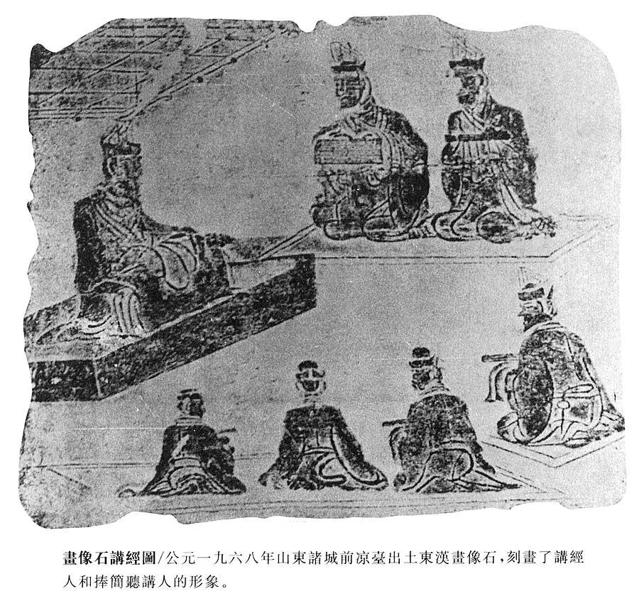
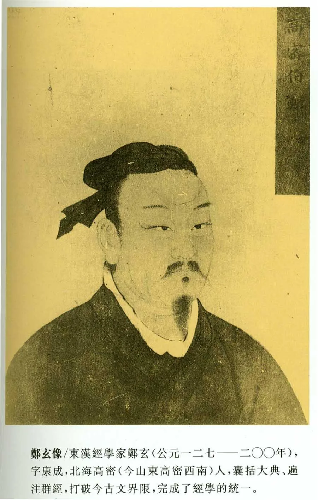

两汉所立博士
西汉今文12博士
经名
西汉所立今文博士
西汉未立之古文
《易》
三家（施、孟、梁丘）
费直传古文《易》
《书》
三家（欧阳、大、小夏侯）
今文28篇
孔壁发现古文《尚书〉
《诗》
三家（齐、鲁、韩）
毛《诗》
《礼》
一家（后氏）
今文17篇
河间献王得古《礼》56篇
《春秋》
二家（公羊、谷梁）
刘歆校书发现古文《左传》
红色字体为今《十三经注疏》中采用者。
东汉立今文14博士
经名
东汉所立博士
《易》
四家（施、孟、梁丘、京）
《书》
三家（欧阳、大、小夏侯）
《诗》
三家（齐、鲁、韩）
《礼》
二家（大、小戴）
《春秋》
公羊二家（严、颜）
东汉讲经图


北京大学历史学系·中国古代史教研室·何晋 制作
Copyright
返回课件首页
参加讨论